Онлайн-тестирование студентов
Полное руководство — тестирование по ссылке, методики, памятка участнику
Для сотрудников центра психологии ДонГУ
Платформа MindCare · обновлено 08.11.2026
Часть 1. Тестирование по ссылке
1. Как это устроено
Тестирование проводится кампаниями. Кампания — это одно тестирование одной группы студентов (курса, потока, факультета) по одной методике. Сайт выдаёт для кампании одну ссылку на всех участников.
Студент открывает ссылку без регистрации, заполняет короткую анкету, даёт согласие на обработку персональных данных и отвечает на вопросы методики. Результат студенту не показывается. Сотрудник центра видит в кабинете, сколько человек прошло, смотрит обработку и статистику и скачивает таблицу xlsx с диаграммами.
| Этап | Кто и где |
|---|---|
| 1. Кампания | Супервизор создаёт кампанию, при необходимости задаёт сроки и кодовое слово (разделы 2–4). |
| 2. Рассылка | Супервизор или куратор отправляет ссылку студентам (раздел 5). |
| 3. Прохождение | Студенты проходят тест с телефона или компьютера (раздел 6 и памятка участнику). |
| 4. Завершение | Срок заканчивается сам или супервизор закрывает кампанию (раздел 7). |
| 5. Результаты | «Результаты», «Статистика», таблица xlsx (разделы 8–10). |
| 6. Хранение | Обращение с данными, удаление ответов (раздел 11). |
Методики (тесты), по которым проводится тестирование, создаются и правятся в разделе «Тесты» — об этом отдельное руководство «Методики». Методика и тест — одно и то же: «тест» — так её видит проходящий, «методика» — так её видят сотрудники (ключ, шкалы, уровни, версии). Подробнее — в разделе «Методика и тест: в чём разница» того руководства.
Адрес сайта: https://mindcare.donnu.ru. Все действия выполняются в личном кабинете после входа, в кабинете «Супервизор», раздел меню «Тестирование по ссылке». На каждой странице есть кнопка «Справка» — она открывает это руководство.
2. Создание кампании
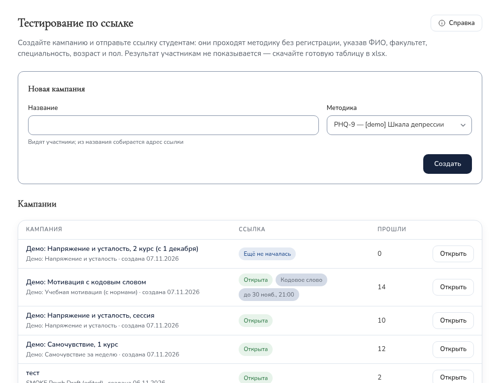
| № | Что сделать | Что вы увидите |
|---|---|---|
| 1 | В меню слева выбрать «Тестирование по ссылке». | Форма «Новая кампания» и список кампаний. |
| 2 | В поле «Название» ввести название, которое увидят студенты, например «ИТО Экономфак 2026». | — |
| 3 | В поле «Методика» выбрать методику и нажать «Создать». | Открывается страница новой кампании: статус «Открыта», «Прошли тестирование: 0», поле со ссылкой. |
| 4 | Нажать «Копировать» рядом со ссылкой. | «Ссылка скопирована» — её можно вставить в мессенджер или письмо. |
Список кампаний. В строке — название, методика, дата создания, состояние ссылки, значки «Кодовое слово» и «до …» (срок окончания) и число прошедших. Кампания открывается кнопкой «Открыть» или щелчком по названию.
| Состояние | Что значит |
|---|---|
| Открыта | Ссылка принимает ответы. |
| Ещё не началась | Задано время начала, оно не наступило (раздел 4). |
| Срок истёк | Наступило время окончания — ответы не принимаются. |
| Закрыта | Кампанию закрыли кнопкой «Закрыть». |
Как выглядит ссылка
Ссылка собирается из названия кампании латиницей и заканчивается
шестью случайными символами, например
https://mindcare.donnu.ru/test/ito-ekonomfak-2026-k7m2xq.
Случайная часть не даёт посторонним подобрать адрес, поэтому ссылку
копируют целиком, без изменений.
Советы
- Делайте отдельную кампанию на каждую группу, которую потом нужно анализировать отдельно (поток, факультет, курс, год). Внутри кампании результаты можно разделить фильтрами по факультету и полу, но не по группе или курсу.
- Название видят студенты — пишите его понятно, без служебных пометок.
- Повторное тестирование той же группы (например, через год) — новая кампания: так результаты не смешаются.
- В поле «Методика» есть все опубликованные методики центра. Если нужной нет — она не опубликована, скрыта или заменена новой версией (см. «Методики»).
3. Страница кампании
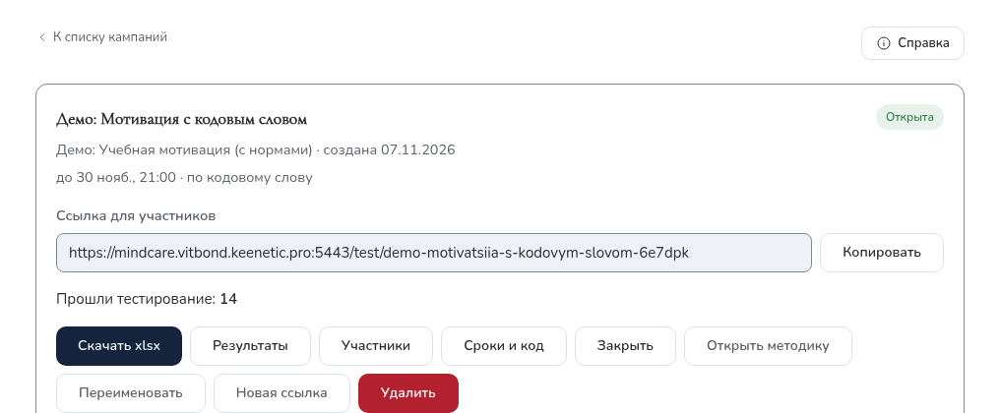
Под названием — методика, дата создания, сроки и отметка «по кодовому слову», если они заданы. Ниже — ссылка для участников и счётчик «Прошли тестирование».
| Кнопка | Что делает |
|---|---|
| Копировать | Копирует ссылку для участников. |
| Скачать xlsx | Таблица результатов с диаграммами (раздел 10). Доступна, когда есть хотя бы один ответ. |
| Результаты | Обработка и статистика на экране (разделы 8–9). |
| Участники | Список прошедших: ФИО, факультет, специальность, возраст, пол, время. Здесь удаляют отдельный ответ. |
| Сроки и код | Время начала и окончания, кодовое слово (раздел 4). |
| Закрыть / Открыть снова | Остановить приём ответов или возобновить его. |
| Открыть методику | Переход к методике этой кампании в разделе «Тесты». |
| Переименовать | Новое название. Адрес ссылки не меняется — разосланная ссылка продолжает работать. |
| Новая ссылка | Выпускает новую ссылку; старая сразу перестаёт работать, ответы сохраняются. |
| Удалить | Удаляет кампанию со всеми ответами (раздел 11). |
Вернуться к списку — «К списку кампаний» вверху страницы.
4. Сроки и кодовое слово
Кнопка «Сроки и код» на странице кампании открывает панель настроек.
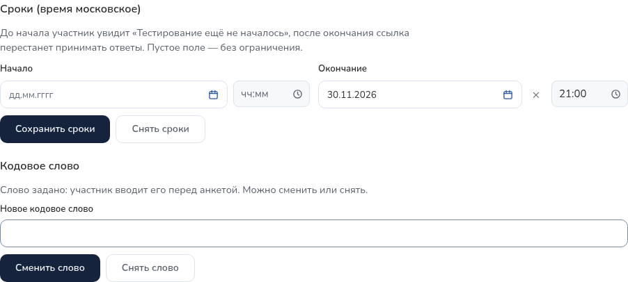
Сроки (время московское).
- Начало — до этого времени участник увидит «Тестирование ещё не началось» с датой начала, анкета не откроется. Удобно разослать ссылку заранее.
- Окончание — с этого времени ссылка перестаёт принимать ответы, как у закрытой кампании. Закрывать вручную не нужно.
- Пустое поле — без ограничения. «Сохранить сроки» — применить, «Снять сроки» — убрать оба ограничения.
- Чтобы продлить тестирование, поменяйте время окончания или снимите сроки. Кнопка «Открыть снова» срок не продлевает.
Кодовое слово — второй барьер для посторонних: участник вводит его перед анкетой. Без слова анкета и вопросы не открываются.
- От 4 до 64 символов. Регистр и лишние пробелы не важны: «Весна 2026» и «весна 2026» — одно слово.
- После сохранения слово больше не показывается (на сайте хранится только его зашифрованный отпечаток). Запишите его и сообщите участникам — устно на занятии или отдельным сообщением.
- «Сменить слово» — задать новое; участники, начавшие тест со старым словом, при отправке получат просьбу ввести новое, их ответы при этом не теряются. «Снять слово» — анкета снова открывается по одной ссылке.
5. Рассылка ссылки студентам
Ссылку отправляют в чат группы, по электронной почте, через куратора или показывают на экране на занятии. Одна ссылка подходит всем участникам кампании.
Образец сообщения:
Уважаемые студенты! Центр психологии ДонГУ приглашает вас пройти психологическое тестирование. Это займёт около 15 минут. Регистрация на сайте не нужна, можно с телефона.
Ссылка: <вставьте ссылку кампании> Кодовое слово: <если задано — назовите на занятии> Пройти можно до: <дата и время, если задан срок>
Вы укажете ФИО, факультет, специальность, возраст и пол и ответите на вопросы. Отвечайте искренне, долго не раздумывая. Результаты обрабатываются специалистами центра и конфиденциальны.
К сообщению можно приложить памятку участнику — на странице теста у студента тоже есть ссылка «Как пройти тестирование».
Перед рассылкой:
- Откройте ссылку сами (лучше с телефона) и убедитесь, что видите название кампании и анкету (или поле кодового слова). Проходить тест не нужно; если прошли — удалите свой ответ (раздел 11).
- Не публикуйте ссылку на открытых страницах: пройти тест может любой, у кого она есть. Для дополнительной защиты задайте кодовое слово.
- Если ссылка попала не туда — «Новая ссылка»: старая сразу перестанет работать, полученные ответы сохранятся. Новую ссылку нужно разослать заново.
6. Что делает участник
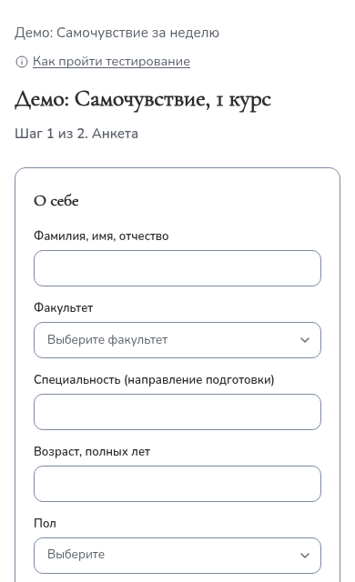
- Открывает ссылку. Если задано кодовое слово — вводит его и нажимает «Продолжить».
- Заполняет ФИО, факультет, специальность, возраст (14–100) и пол.
- Читает текст согласия на обработку персональных данных и ставит отметку. Без согласия перейти к вопросам нельзя.
- Нажимает «Перейти к вопросам», читает инструкцию и отвечает на все вопросы. Сверху — «Отвечено N из M».
- Нажимает «Отправить ответы». Если что-то пропущено, сайт подсветит пропуски.
- Видит «Спасибо за участие!». Результат не показывается.
Если студент случайно обновил страницу, анкета и ответы сохраняются до закрытия вкладки. Повторное нажатие «Отправить» не создаёт дубль.
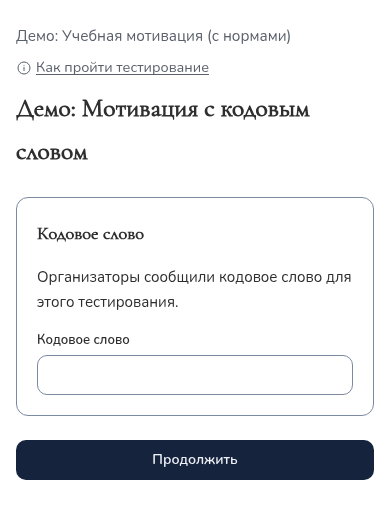
7. Ход тестирования и завершение
- Сколько человек прошло — «Прошли тестирование: N» на странице кампании и колонка «Прошли» в списке. Чтобы увидеть новое число, обновите страницу.
- «Участники» — список прошедших для сверки со списком группы.
- Тестирование заканчивается само, если задано время окончания. Иначе, когда всё собрано, нажмите «Закрыть»: ссылка перестанет принимать ответы, студенты увидят «Опрос недоступен». Результаты остаются. Если кто-то не успел — «Открыть снова».
8. Результаты на экране
Кнопка «Результаты» на странице кампании открывает обработку всех ответов. Расчёт выполняется автоматически по правилам методики. Вверху — фильтры (факультет, пол, достоверность, тип; «Сбросить» — вернуть всех) и вкладки «Сводка и участники» и «Статистика». Все цифры пересчитываются по выбранной группе.
Вкладка «Сводка и участники»:
- итоги: участников, достоверных, недостоверных, с выраженным типом (если в методике заданы достоверность и типы);
- «По шкалам» — среднее, минимум, максимум и число участников на каждом уровне. Если у шкалы свои уровни, они перечислены в одной ячейке («Норма: 1; Умеренное: 8; Выраженное: 1»);
- «Типы» — сколько участников с каждым типом, в том числе недостоверных;
- «По полу» и «По факультетам»;
- таблица участников: баллы по шкалам с цветом уровня, достоверность, тип. Если у шкалы заданы нормы, после сырого балла в скобках стоит стандартный балл (например, стен), под таблицей — пояснение.
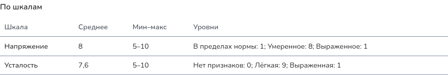
Как читать баллы ИТО
| Баллы I–VIII | Цвет | Уровень |
|---|---|---|
| 0–2 | голубой в xlsx, серый на экране | Гипоэмотивность, плохое самопонимание или неоткровенность |
| 3–4 | без заливки | Норма |
| 5–7 | жёлтый | Акцентуированные черты |
| 8–9 | красный | Дезадаптирующие свойства |
Достоверность. Если по шкале лжи (L) или аггравации (F) больше 5 баллов, результат помечен «недостоверно». Баллы всё равно показываются и выгружаются; интерпретировать их нужно с осторожностью.
Типы. Тип присваивается, если все его шкалы набрали 8 баллов и больше; подходящих типов может быть несколько. При недостоверном результате тип выводится с пометкой «(недостоверно)».
| Тип | Шкалы (все ≥ 8) |
|---|---|
| Дезадаптивно-интровертированный, суицидальный риск | Тревожность, Интроверсия, Аггравация |
| Социально активный, ранимый | Экстраверсия, Сензитивность |
| Тревожно-агрессивный, тенденция нападения, в том числе с антисоциальной тенденцией | Тревожность, Экстраверсия, Агрессивность, Спонтанность |
| Тревожно-чувствительный, виктимный, суицидальный риск | Тревожность, Сензитивность, Лабильность |
| Защитно-агрессивный, конфликтный | Спонтанность, Агрессивность, Ригидность, Интроверсия |
| Неуравновешенный | Лабильность, Агрессивность |
Тип «Дезадаптивно-интровертированный» требует аггравацию 8 и выше, поэтому всегда идёт с пометкой «(недостоверно)» — так следует из правил методики. Автоматическая обработка — первичная: выводы о конкретном студенте делает специалист. Чтобы быстро найти студентов, которым может понадобиться внимание, выберите нужный тип в фильтре «Тип» или посмотрите красные ячейки.
Для других методик уровни, достоверность, типы и нормы задаются в их правилах обработки — см. «Методики».
9. Статистика
Вкладка «Статистика» — обезличенная картина по выбранной группе, ФИО на ней нет:
- Прохождения по дням — сколько человек прошли тест в каждый день;
- Распределение баллов по шкалам — сколько участников набрали каждый балл (подписи над столбцами — число участников);
- Ответы по вопросам — для каждого вопроса: сколько участников выбрали каждый вариант, число и процент. Поле «Найти вопрос» ищет по номеру или тексту.
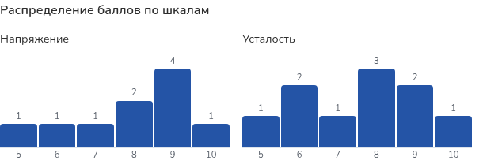
Если в выбранной группе меньше 5 человек, распределения не показываются — по ним можно было бы узнать конкретного участника. Расширьте фильтр.
10. Выгрузка таблицы xlsx
Кнопка «Скачать xlsx» на странице кампании. Файл открывается в Excel и LibreOffice. Выгрузка всегда содержит всех участников кампании — фильтры экрана на неё не влияют. Каждое скачивание записывается в журнал действий.
| Лист | Содержимое |
|---|---|
| Результаты | № п/п, ФИО, возраст, пол, факультет, специальность, баллы по шкалам с заливкой уровня; колонки стандартных баллов, если у шкал есть нормы; «Достоверность», «Тип», «Дата прохождения» (московское время). |
| Уровни | Те же участники; вместо баллов — уровни словами. |
| Сводка | Итоги, статистика по шкалам, частоты типов, разбивки по полу и факультетам, легенда уровней. |
| Ответы | Ответ каждого участника на каждый вопрос — для ручной перепроверки. |
| Статистика по вопросам | Для каждого вопроса: сколько ответили, сколько выбрали каждый вариант и процент. |
| Графики | Диаграммы Excel: прохождения по дням, уровни основных шкал, распределение баллов по каждой шкале. Данные каждой диаграммы — таблицей слева от неё. |
Диаграммы на листе «Графики» — обычные диаграммы Excel: их можно перекрасить, переподписать или скопировать в отчёт. Если изменить числа в таблице рядом, диаграмма обновится.
11. Персональные данные
Правила:
- Ответы и ФИО хранятся на сайте в защищённом виде и видны только сотрудникам с ролью «Супервизор». Психологи и студенты их не видят. Просмотр участников, результатов, статистики и каждая выгрузка записываются в журнал.
- Скачанный файл содержит ФИО и результаты. Храните его только на рабочем компьютере, не пересылайте в открытых чатах и по личной почте, удаляйте, когда он больше не нужен.
- Результаты на сайте хранятся, пока их не удалят вручную.
Удаление:
- Один ответ (отзыв согласия, тестовое прохождение, дубль): «Участники» → «Удалить» у нужной строки → подтвердить. Ответ удаляется безвозвратно вместе с записью согласия.
- Кампания целиком: «Удалить» на странице кампании → подтвердить. Удаляются все ответы, ссылка перестаёт работать, вы возвращаетесь к списку. Перед удалением скачайте xlsx, если результаты ещё нужны.
12. Частые вопросы
| Ситуация | Что делать |
|---|---|
| Студент видит «Опрос недоступен». | Кампания закрыта, срок истёк, кампания удалена или ссылка перевыпущена. Проверьте состояние в списке; при необходимости — «Открыть снова», продлите срок в «Сроки и код» или отправьте актуальную ссылку. Если ссылку копировали не целиком — отправьте заново. |
| Студент видит «Тестирование ещё не началось». | Задано время начала. Сообщите время или измените его в «Сроки и код». |
| Студент пишет «Неверное кодовое слово». | Проверьте, какое слово вы сообщили. Если забыли — задайте новое («Сменить слово») и сообщите его. |
| Студент прошёл тест дважды. | В «Участниках» найдите обе строки по ФИО и времени, удалите лишнюю. |
| Студент ошибся в ФИО или факультете. | Исправить анкету нельзя. Удалите его ответ и попросите пройти заново. |
| Студент хочет отозвать согласие. | Удалите его ответ (раздел 11). Если результаты уже выгружались — удалите его строку и из скачанных файлов. |
| Студент закрыл вкладку посреди теста. | Начать заново по той же ссылке; незаконченные ответы не сохраняются. |
| Студент спрашивает свой результат. | Сайт результат не показывает. Его может сообщить специалист центра на консультации. |
| Не видно распределений на вкладке «Статистика». | В выбранной группе меньше 5 человек — расширьте фильтр. |
| Нужно исправить название кампании. | «Переименовать». Ссылка остаётся прежней. |
| Нужно изменить вопросы методики. | «Открыть методику» → см. «Методики». Если ответы уже есть — через новую версию. |
| Нет раздела «Тестирование по ссылке». | Переключитесь на кабинет «Супервизор» («Сменить кабинет»). Если такого кабинета нет — обратитесь к администратору сайта. |
Часть 2. Методики
1. Что такое методика
Методика — это тест: вопросы, варианты ответа, ключ (сколько баллов даёт каждый ответ и по какой шкале) и правила обработки (подписи шкал, уровни, достоверность, типы, нормы). Все методики собраны в разделе меню «Тесты» (у психолога — «Мои тесты»). Одна и та же методика может использоваться:
- в каталоге тестов, который студент проходит в личном кабинете;
- в тестировании по ссылке — см. руководство «Тестирование по ссылке».
| Роль | Что может |
|---|---|
| Супервизор, администратор | Видят все методики. Создают, загружают из файла, правят, публикуют, скрывают и удаляют. Проверяют методики психологов: публикуют или возвращают на доработку. |
| Психолог | Видит только свои методики. Создаёт, загружает, правит и отправляет на модерацию. Опубликовать сам не может. |
| Студент | Видит в каталоге только опубликованные и включённые методики и только вопросы — ключ и правила обработки ему не показываются. |
Методика и тест: в чём разница
Это не два разных объекта, а одна запись, на которую смотрят с двух сторон.
| Тест | Методика | |
|---|---|---|
| Кто так говорит | Студент, каталог тестов | Сотрудники: психолог, супервизор, администратор |
| Что имеется в виду | То, что проходит респондент: вопросы, варианты ответа, результат с пояснением | Тест вместе с тем, как он устроен и обрабатывается: ключ, шкалы, уровни, достоверность, типы, нормы |
| Что с ней делают | Проходят и смотрят результат | Создают, правят, загружают из xlsx, публикуют, ведут версии |
Одна и та же методика работает в двух местах: в каталоге (результат студента сохраняется в его аккаунте) и в тестировании по ссылке (участник без аккаунта, ответы хранятся отдельно). Методику, которая нужна только для кампаний, можно скрыть из каталога — кампанию по ней создать всё равно можно.
Обычный порядок работы: создать методику в конструкторе или загрузить из файла xlsx (разделы 3, 7) → задать правила обработки (4) → проверить предпросмотром (5) → опубликовать (6) → использовать в каталоге или в кампании (10).
На странице «Тесты» и в форме методики есть кнопка «Справка» — она открывает это руководство в новой вкладке, заполненная форма не теряется.
2. Список методик
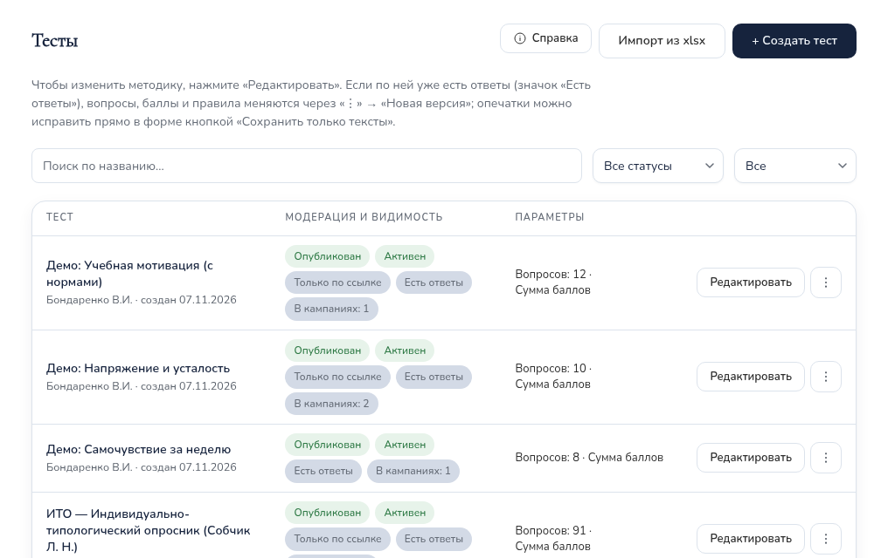
Вверху — кнопки «Справка», «Импорт из xlsx» и «+ Создать тест», под ними — короткая подсказка, поиск по названию и фильтры по статусу и видимости.
| Колонка | Что показывает |
|---|---|
| Тест | Название, автор, дата создания. |
| Модерация и видимость | Статус (таблица ниже); «Активен» или «Скрыт»; «Версия N», если версий несколько; «Заменена новой версией»; «Только по ссылке»; «Есть ответы» — методику уже проходили, её вопросы и правила меняются только новой версией (раздел 8); «В кампаниях: N» — в скольких кампаниях она выбрана. |
| Параметры | Число вопросов и способ подсчёта. |
| Действия | Основная кнопка («Редактировать» или «Опубликовать») и меню «⋮». |
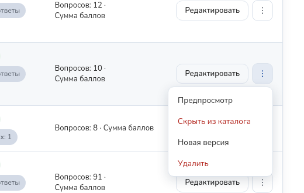
| Статус | Что значит |
|---|---|
| Черновик | Методика в работе. Студенты её не видят, для кампании её выбрать нельзя. |
| На проверке | Психолог отправил методику на модерацию. Ждёт решения супервизора; автор её в это время не правит. |
| Нужны правки | Супервизор вернул методику автору с комментарием. |
| Опубликован | Методика доступна в каталоге (если включена и не «Только по ссылке») и при создании кампаний. |
Число методик «на проверке» показывается бейджем у пункта «Тесты» в меню супервизора.
3. Создание методики в конструкторе
Конструктор подходит для любой методики, в том числе с картинками, аудио, видео и разными вариантами ответа у разных вопросов.
| № | Что сделать | Что вы увидите |
|---|---|---|
| 1 | В разделе «Тесты» нажать «+ Создать тест». | Форма «Новый тест»: «Основное», «Вопросы», «Интерпретация результатов», «Правила обработки». |
| 2 | Заполнить «Основное» (таблица ниже). | — |
| 3 | В «Вопросах» нажать «+ Добавить вопрос» и заполнить вопрос; повторить для всех. | Карточки «Вопрос 1», «Вопрос 2»… Порядок — стрелками, удаление — корзиной. |
| 4 | При необходимости заполнить «Интерпретацию результатов» и «Правила обработки» (раздел 4). | Под правилами — результат проверки (раздел 5). |
| 5 | Нажать «Предпросмотр» и пройти методику глазами студента. | Окно «Предпросмотр — так тест видит студент». |
| 6 | Нажать «Создать тест». | Методика появляется в списке. |
Раздел «Основное»
| Поле | Что задаёт |
|---|---|
| Название * | Обязательно. Его видят студенты и участники тестирования по ссылке. |
| Описание | Кратко о методике. Если инструкция в правилах не задана, перед вопросами показывается описание. |
| Метод подсчёта | «Сумма баллов», «Среднее значение» или «Взвешенная сумма (вес вопроса)». |
| Лимит времени, мин | Необязательно. Только для каталога. |
| Типы материалов, Темы | Необязательно — для группировки. |
| Статус | Только при создании супервизором: «Черновик» или «Опубликован сразу». Психолог всегда создаёт черновик. |
| Активен — виден студентам в каталоге | Снятая отметка скрывает методику из каталога. |
| Перемешивать порядок вопросов / вариантов | Только для каталога. |
| Только для тестирования по ссылке | Методика не показывается в каталоге, но доступна для кампаний. |
Тип ответа вопроса
| Тип | Как считается |
|---|---|
| Один вариант | Выбирается один вариант, у каждого — свой балл (например, «Да» — 1, «Нет» — 0). Варианты у каждого вопроса свои. |
| Несколько вариантов | Баллы выбранных вариантов складываются. |
| Шкала | Число от «Минимума» до «Максимума» с «Шагом»; балл равен числу. |
| Свободный ответ | Текст; в подсчёте не участвует, хранится зашифрованным. |
- Шкала (для многошкальных) — код шкалы вопроса («L», «VII», «T»). Шкала указывается либо у всех вопросов, которые дают баллы, либо ни у одного. Вопрос, у которого все варианты дают 0 баллов (вводный), можно оставить без шкалы.
- Обратный ключ — просто другие баллы у вариантов: у прямого вопроса «всегда — 3 … никогда — 0», у обратного «всегда — 0 … никогда — 3».
- Медиа: к вопросу — изображения, аудио, видео; к варианту — картинка.
- Интерпретация результатов — пороги баллов с «Названием уровня» и «Рекомендацией»: этот текст студент видит в своём результате в каталоге.
4. Правила обработки
Правила описывают первичную обработку: подписи и порядок шкал в таблице xlsx, уровни, достоверность, типы и нормы. Поставьте отметку «Задать правила обработки». Для ИТО правила заполнены по методичке — их удобно открыть как образец.
| Что задаётся | Как заполнить |
|---|---|
| Инструкция участнику | Текст перед вопросами. |
| Шкалы | «+ Шкала» или «Добавить шкалы из вопросов». Для каждой: «Код» (как у вопросов), «Подпись», отметка «Основная» — для неё считается уровень. Порядок строк (стрелка «↑») — порядок колонок в таблице xlsx. |
| Предел достоверности | Только у шкал достоверности (у ИТО — L и F, предел 5). Балл выше предела — результат «недостоверно». |
| Пометка недостоверного результата | Текст у недостоверных результатов (у ИТО — «недостоверно»). |
| Уровни основных шкал | Общие для основных шкал диапазоны: «Код (латиница)», «Название», «От», «До», по возрастанию, без пропусков. У ИТО: 0–2, 3–4, 5–7, 8–9. |
| Свои уровни | У шкалы, пороги которой отличаются от общих (раздел 4.1). |
| Нормы | Перевод сырого балла в стены, T-баллы и т. п. (раздел 4.2). |
| Типы | «Порог типа» и «+ Тип»: название и шкалы. Тип выражен, если все его шкалы набрали не меньше порога. |
- Уровни, достоверность, типы и нормы видят только психолог и супервизор. Студенту они не показываются.
- Без правил методика тоже работает: студент получает баллы и интерпретацию, в результатах кампании выводятся баллы и средние.
4.1. Свои уровни шкалы
Если у шкал разные пороги (например, «Напряжение» 0–5 / 6–9 / 10–15, а «Усталость» 0–4 / 5–9 / 10–15), у основной шкалы поставьте отметку «Свои уровни» и задайте её уровни — они заменят общие для этой шкалы. Шкалы без этой отметки используют общие «Уровни основных шкал».
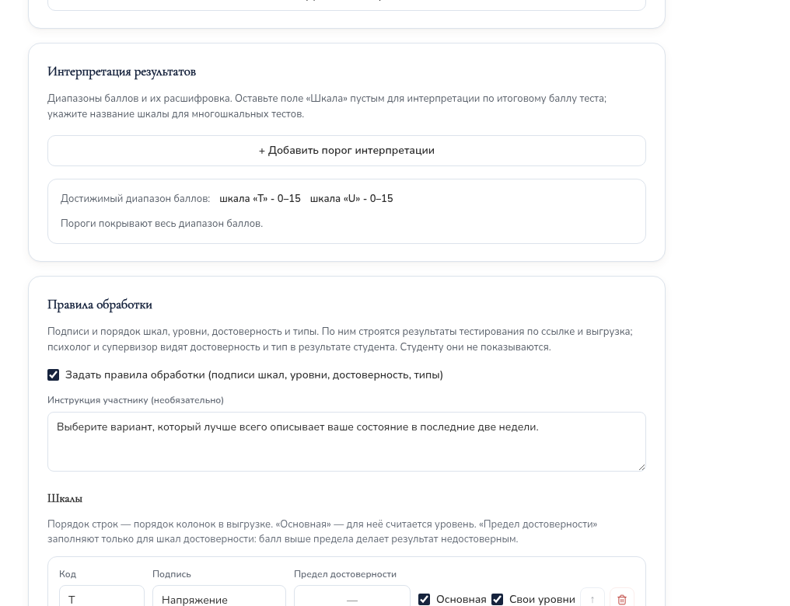
4.2. Нормы (стандартные баллы)
Нормы переводят сырой балл шкалы в стандартный — стены, T-баллы, станайны, процентили — по таблице из методички. Нормы применяются только в тестировании по ссылке: там есть анкета (пол, возраст, факультет). В каталоге студента их нет.
- У шкалы поставьте отметку «Нормы (стандартные баллы)».
- Выберите «Тип» (Стены, T-баллы, Станайны, Процентили, Другое) и при необходимости «Подпись».
- Заполните группы: «Пол» (любой, женский, мужской), «Возраст от … до» и строки таблицы «Сырой от», «Сырой до», «Значение». Строки — без пересечений, покрывают все возможные баллы шкалы.
- Группа выбирается по анкете участника — первая подходящая по порядку. Последней поставьте группу без условий — для всех остальных. Если подходящей группы нет, стандартный балл не считается.
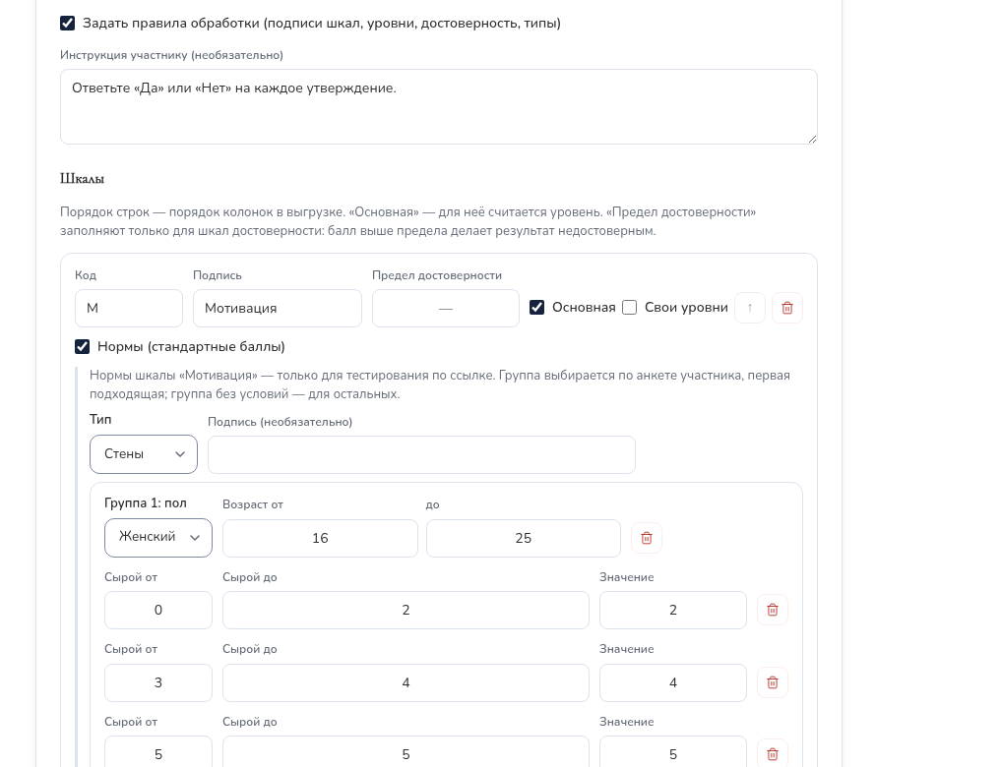
В результатах кампании стандартный балл стоит в скобках после сырого, в xlsx — отдельной колонкой «<шкала> (Стены)». В методичке ИТО (Собчик Л. Н.) таблиц перевода нет — ИТО считается по сырым баллам.
5. Проверка перед публикацией
Замечания под правилами. Сайт сам сверяет правила с вопросами: «Правила согласованы с вопросами» или список расхождений — шкала есть у вопросов, но не описана в правилах; шкала из правил не встречается в вопросах; уровни или таблица норм покрывают не все возможные баллы шкалы. Пока расхождения есть, методику нельзя отправить на модерацию или опубликовать.
Замечания к интерпретации (непокрытые или недостижимые диапазоны) публикацию не блокируют.
Предпросмотр (в форме и в меню «⋮») показывает методику так, как её видит студент. Ответьте и нажмите «Посчитать результат»: появятся баллы по шкалам с уровнями, достоверность и тип. Ничего не сохраняется. Проверьте ключ на крайних случаях: все ответы «Да», все «Нет», ответы для недостоверного результата.
6. Публикация и модерация
Методика супервизора публикуется сразу при создании («Опубликован сразу») или позже кнопкой «Опубликовать» в списке.
Методика психолога проходит модерацию:
| № | Что сделать | Что вы увидите |
|---|---|---|
| 1 | Психолог проверяет методику и нажимает «Отправить на модерацию». | Статус «На проверке», у супервизора — бейдж в меню. |
| 2 | Супервизор открывает «Тесты», фильтр «На проверке», проверяет («Предпросмотр», «Редактировать»). | — |
| 3 | Всё верно — «Опубликовать». | «Опубликован»; психолог получает сообщение. |
| 4 | Нужны исправления — «Вернуть на доработку» с комментарием. | «Нужны правки»; психолог исправляет и отправляет снова. |
Если психолог правит свою опубликованную методику, она снимается с публикации и снова проходит модерацию. Правка супервизором статус не меняет.
7. Загрузка методики из файла xlsx
Удобно, когда методика уже есть в таблице: вопросы и ключ переносятся копированием.
| № | Что сделать | Что вы увидите |
|---|---|---|
| 1 | «Импорт из xlsx» → «Скачать шаблон». | Файл «Шаблон_методики.xlsx»; первый лист — «Как заполнить». |
| 2 | Заполнить листы (таблица ниже), сохранить как xlsx. | — |
| 3 | В окне импорта выбрать файл. | Сводка или список ошибок. |
| 4 | Ошибки — исправить по адресу (лист, строка, колонка) и выбрать файл снова. | «Файл в порядке: …» |
| 5 | «Создать черновик». | Форма методики со статусом «Черновик». |
| 6 | Проверить (раздел 5) и опубликовать или отправить на модерацию. | — |
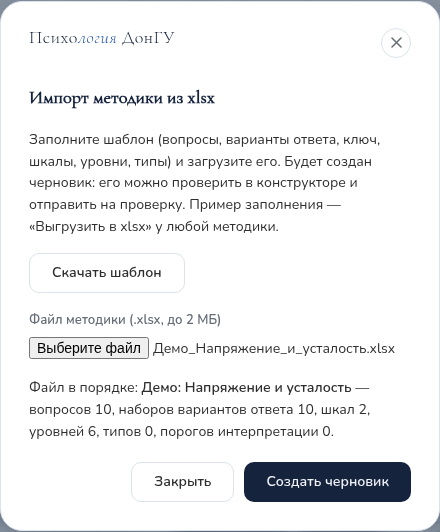
Листы шаблона (первая строка — заголовки, их не менять):
| Лист | Что заполнить |
|---|---|
| Методика | «Поле» / «Значение»: Название (обязательно), Описание, Инструкция, Подсчёт (сумма, среднее, взвешенная), Только по ссылке (да / нет), Пометка недостоверности. |
| Варианты ответа | Общий набор для всех вопросов: «Порядок», «Текст варианта» — 1 Да, 2 Нет или 1…5 для шкалы Лайкерта. |
| Варианты вопросов | Если у вопроса свои варианты (как в опросниках с разными ответами на каждый вопрос): «№ вопроса», «Порядок» (1, 2, … у каждого вопроса заново), «Текст варианта». Свой набор заменяет общий; если свои варианты у всех вопросов, лист «Варианты ответа» можно не заполнять. |
| Вопросы | «№», «Текст вопроса». Номера подряд с 1. |
| Ключ | «Шкала», «№ вопроса», «Вариант (порядок)» — в наборе этого вопроса, «Балл». Строка на каждый значимый ответ; ответ без строки даёт 0. Пример ИТО: «VII · 8 · 1 · 1» — ответ «Да» на вопрос 8 даёт 1 балл по шкале VII. |
| Шкалы | «Код», «Подпись», «Основная (да/нет)», «Предел достоверности»; для норм — «Нормы: тип» (sten, t, stanine, percentile, custom) и «Нормы: подпись». |
| Уровни | «Код (латиница)», «Название», «От», «До», «Шкала» — пусто: общий уровень; код основной шкалы: свой уровень этой шкалы. |
| Типы | «Название типа», «Шкалы (через запятую)», «Порог» (одинаковый у всех). |
| Интерпретация | Необязательно: шкала, «От», «До», «Название», «Рекомендация». |
| Нормы | Необязательно: «Шкала», «Пол» (муж/жен, пусто — любой), «Возраст от», «Возраст до», «Факультет» (код, пусто — любой), «Сырой балл от», «Сырой балл до», «Значение». Строки с одинаковыми шкалой, полом, возрастом и факультетом — одна группа, в порядке появления. |
- Готовые образцы: «Выгрузить в xlsx» в форме любой методики (например, ИТО или демо-методик, раздел 9). Возьмите файл за основу и смените название на листе «Методика».
- Импорт всегда создаёт новую методику-черновик, существующие не меняет.
- Ограничения шаблона: вопросы — с выбором одного ответа; без картинок, аудио и видео; вопрос — не больше чем в одной шкале; файл до 2 МБ, только xlsx.
| Сообщение | Что исправить |
|---|---|
| «Это не файл xlsx» | Сохраните файл как «Книга Excel (.xlsx)». |
| «номера должны идти подряд» | На листе «Вопросы» или «Варианты вопросов» пропущен или повторён номер. |
| «нет такого варианта у этого вопроса» | В «Ключе» номер варианта больше числа вариантов этого вопроса. |
| «нет вариантов ответа у вопросов …» | Заполните «Варианты ответа» или строки этих вопросов на «Вариантах вопросов». |
| «нет такой шкалы на листе «Шкалы»» | В «Уровнях» или «Нормах» указан код шкалы, которой нет на листе «Шкалы». |
| «свои уровни — только у основной шкалы» | Отметьте шкалу как основную или уберите код шкалы в «Уровнях». |
| «тип норм указан, но на листе «Нормы» нет строк» | Заполните «Нормы» или очистите колонку «Нормы: тип». |
| Замечание «уровни не покрывают баллы …» | Не ошибка — черновик создаётся, но до публикации закройте пропуск. |
8. Изменение методики
Нажмите «Редактировать» в строке методики (в карточке кампании — «Открыть методику»). Если по методике уже есть ответы (значок «Есть ответы»), форма сразу показывает, что можно сделать:
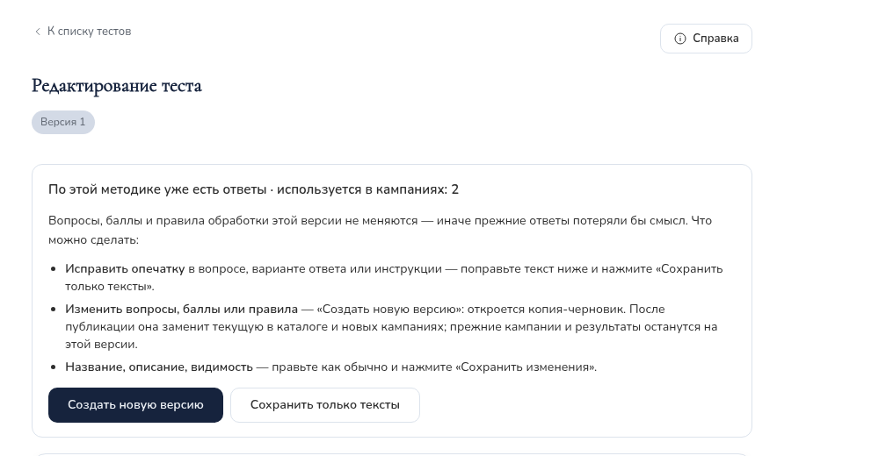
| Ситуация | Что сделать |
|---|---|
| Ответов ещё нет | Правьте как обычно → «Сохранить изменения». Если методика выбрана в кампаниях без ответов, форма предупредит: правки сразу применятся и к ним. |
| Ответы есть, нужна опечатка | Исправьте текст вопроса, варианта или инструкции → «Сохранить только тексты». Баллы и состав не меняются. |
| Ответы есть, нужно изменить вопросы, баллы или правила | «Создать новую версию» (в форме) или «⋮» → «Новая версия» (в списке). Откроется черновик «Версия 2» — исправьте и опубликуйте. Прежняя версия получит пометку «Заменена новой версией»: её не будет в каталоге и при создании новых кампаний, а прежние результаты и идущие кампании останутся на ней. |
| Ответы есть, нужно поменять название, описание, видимость | Правьте → «Сохранить изменения». |
| Нужна похожая, но отдельная методика | «Дублировать» — независимая копия-черновик. |
| Методику нужно временно убрать | «⋮» → «Скрыть из каталога»; вернуть — «Показать в каталоге». Скрытую нельзя выбрать для новой кампании. |
| Методика больше не нужна | «Удалить». Методику, по которой есть кампания, удалить нельзя — скройте её. |
| Нужна копия в файле | «Выгрузить в xlsx» в форме методики. |
Почему так: ответы прошедших привязаны к вопросам и баллам методики — если их поменять, прежние результаты потеряют смысл.
9. Демо-методики
На демо-стенде есть методики-образцы с собственными текстами — на них удобно пробовать возможности:
| Методика | Что показывает |
|---|---|
| Демо: Самочувствие за неделю | Шкала Лайкерта (5 вариантов), обратные пункты, одна шкала, уровни и интерпретация; видна и в каталоге студента. |
| Демо: Напряжение и усталость | Свои варианты ответа у каждого вопроса, обратный ключ, две шкалы со своими уровнями. |
| Демо: Учебная мотивация (с нормами) | «Да / Нет», шкала искренности (достоверность), тип, нормы-стены по полу и возрасту. |
По ним уже есть демо-кампании с ответами, поэтому правка вопросов идёт через новую версию. Чтобы попробовать свободную правку, сделайте копию: «Дублировать» или выгрузите в xlsx и загрузите обратно.
10. Где используются методики
| Где | Что видно |
|---|---|
| Каталог тестов студента | Опубликованные, включённые, не «Только по ссылке» и не заменённые новой версией методики. Студент видит свой балл и интерпретацию. |
| Результат студента из каталога | Психолог — в карточке клиента, супервизор — в карточке студента: баллы, уровни, достоверность, тип. Просмотр записывается в журнал. |
| Тестирование по ссылке | При создании кампании — все опубликованные и включённые методики, кроме заменённых. Результаты, статистика и xlsx — см. «Тестирование по ссылке». |
Ответы из каталога и из тестирования по ссылке хранятся раздельно и не смешиваются.
11. Частые вопросы
| Ситуация | Что делать |
|---|---|
| Не получается изменить вопросы — форма пишет, что есть ответы. | Опечатку — «Сохранить только тексты»; остальное — «Создать новую версию» (раздел 8). |
| Нужной методики нет при создании кампании. | Она не опубликована, скрыта или заменена новой версией — проверьте в «Тестах». |
| Методика не отправляется на модерацию или не публикуется. | Под «Правилами обработки» есть расхождения — исправьте (раздел 5). |
| Как убрать методику из каталога, но оставить для тестирования по ссылке? | Отметка «Только для тестирования по ссылке» в «Основном». |
| Психолог не может изменить свою методику. | Она «На проверке» — дождитесь решения или попросите вернуть на доработку. |
| Импорт пишет об ошибках. | Исправьте ячейки по листу, строке и колонке (таблица в разделе 7) и выберите файл снова. |
| Не считается стандартный балл (стен). | Для участника не нашлась группа норм или балл вне таблицы — добавьте группу без условий и проверьте покрытие баллов. |
Приложение. Памятка участнику
- Откройте ссылку, которую вам прислали, — с телефона или компьютера. Регистрация на сайте не нужна.
- Если на странице есть поле «Кодовое слово» — введите слово, которое сообщили организаторы, и нажмите «Продолжить». Большие и маленькие буквы не важны.
- Заполните анкету: ФИО, факультет, специальность, возраст, пол.
- Прочитайте согласие на обработку персональных данных и поставьте отметку — без неё перейти к вопросам нельзя.
- Нажмите «Перейти к вопросам», прочитайте инструкцию и ответьте на все вопросы. Отвечайте искренне и не раздумывайте долго — правильных и неправильных ответов нет. Сверху видно, сколько вопросов уже отвечено.
- Нажмите «Отправить ответы». Появится «Спасибо за участие!» — тестирование завершено.
Полезно знать
- Обычно тестирование занимает 10–20 минут. Проходите его один раз и до конца.
- Если случайно обновили страницу — ответы сохранятся, пока открыта вкладка. Если закрыть вкладку, придётся начать сначала.
- Если вверху написано «Пройти можно до …» — успейте до этого времени.
- Результаты обрабатывают специалисты центра психологии ДонГУ. Они конфиденциальны и на экран не выводятся.
Если что-то пошло не так
| На экране | Что делать |
|---|---|
| «Тестирование ещё не началось» | Откройте ссылку в указанное время. |
| «Неверное кодовое слово» | Уточните слово у организаторов. |
| «Опрос недоступен» | Тестирование завершено или ссылка скопирована не полностью — обратитесь к тому, кто её прислал. |
Вопросы о тестировании можно задать центру психологической помощи ДонГУ: psychology.center@donnu.ru.